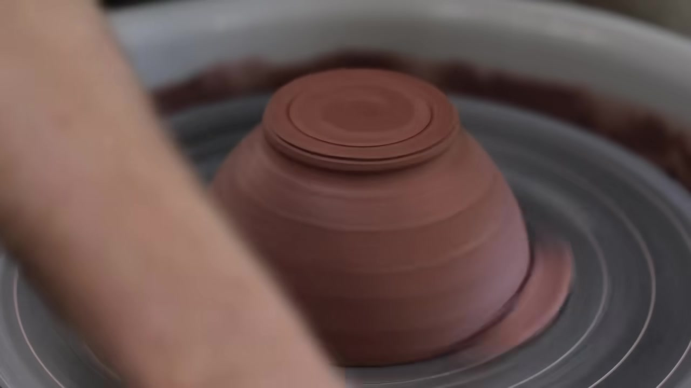
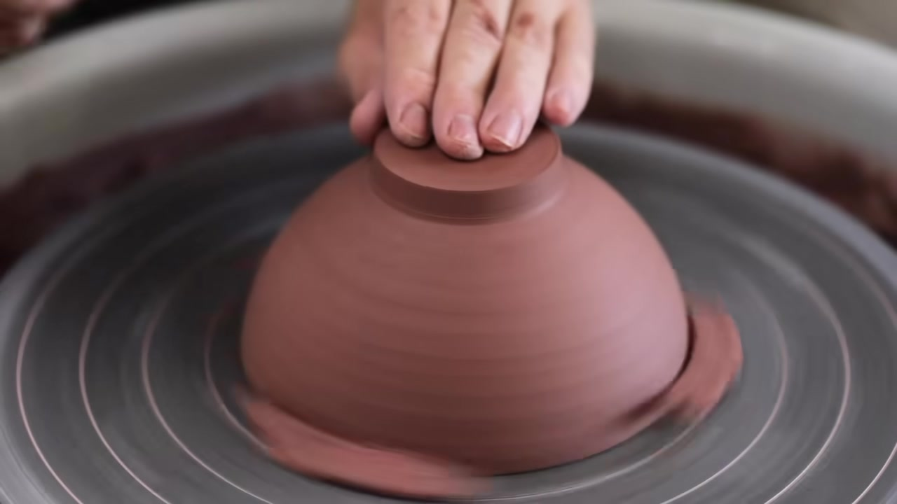
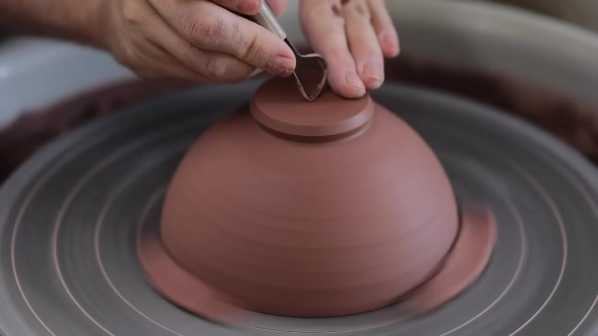

self-improve-bench
Visual Predict Benchmark — questions that require watching tutorial videos to answer correctly.
Domain: pottery · Target: Florian Gadsby pottery bowl (14 min, ASMR, no narration) · Tutorials: 6 silent videos from 5 creators
Tutorial Videos


+ Florian Gadsby teapot ASMR (23 min) + Florian Gadsby trimming ASMR (16 min) + NowWhat plates trimming (7 min)
Question 1 — t = 360s

You are trimming an upside-down clay bowl on the wheel, steadying it with one hand. What do you do next?
Use a ring-shaped trimming tool to trim the outer side of the upside-down clay bowl, shaving off excess clay in long strips.
CORE tool_type: ring/loop trimming tool · action: trim the outer side
BONUS stabilization: steady with other hand · consistent_angle: hold tool at fixed angle
IGNORED direction: outer→inner vs inner→outer · order: side first vs bottom first
Question 2 — t = 395s

You are carving a clay bowl on a spinning wheel. The bowl has a rough base and side. What do you do next?
Use a metal trimming tool to carve a groove into the base of the bowl.
CORE tool_type: metal trimming tool · action: carve a groove into the base
BONUS stabilize_with_left_hand · wheel_spinning
IGNORED direction_of_carving · angle_of_tool
Question 3 — t = 435s

You've just trimmed the base of the upside-down bowl, leaving curled clay shavings. What do you do next?
Use a metal trimming tool to carve a spiral groove on the bottom of the rotating bowl, moving from the outer edge toward the center.
CORE tool_type: metal trimming tool · action: carve spiral groove · location: bottom
BONUS direction: outer edge toward center · steadying: stabilize the bowl
IGNORED spiral_direction: clockwise vs counterclockwise · depth
Question 4 — t = 476s

You are trimming the base of an upside-down clay bowl on a spinning wheel. What do you do next?
Use a loop tool to carve concentric grooves into the flat top of the clay form.
CORE tool: loop tool · action: carve concentric grooves
BONUS angle: tool angle · direction: movement direction
IGNORED direction: inner→outer vs outer→inner